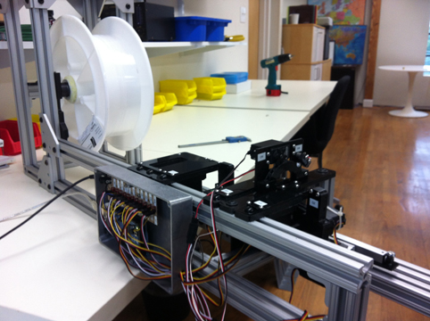
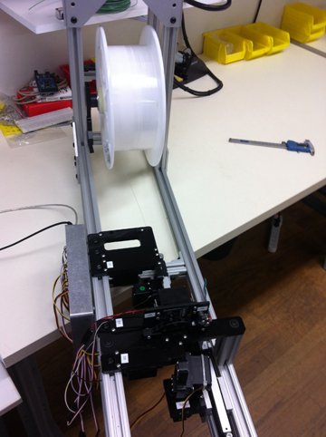
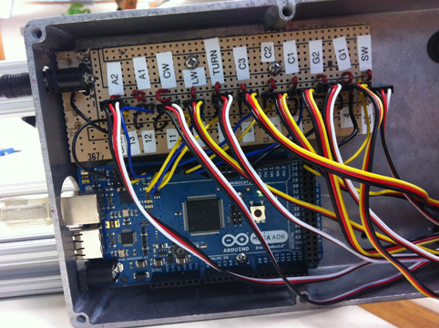
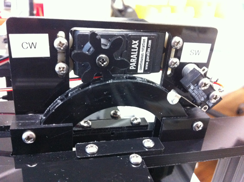

|
||||
|
PROJECTS • NASA RockSat-C • Optical Fiber Cutting Robot • Adaptive Neural Network • Density Shaping • Discrete kCC Control • Statistical Model Predictive Control • Distributed Power System TEACHING COURSES PUBLICATIONS SOFTWARE MASTERS THESIS CURRICULUM VITAE CONTACT |
Optical Fiber Cutting Robot
This robot was made during a summer internship at Current Designs in Philadelphia, PA. The robot pulls an optical fiber from a spool to a desired length, scores and breaks the fiber, and the polishes both ends. Due to time constraints, only a first prototype was made for the pulling and cutting parts. The robot was controlled via an Arduino Mega and received input from the user via a Python GUI. Both codes are listed below. The electrical and software work was done by myself and the mechanical design was done by Chris Broughton.



 PYTHON CODE:
ARDUINO CODE:
|
|||